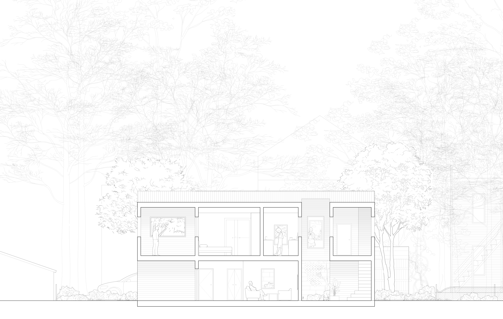

Understory/Overstory
Building Project, Adam Hopfner
Spring 2020
With: Zishi Li, Meghna Mudaliar, Kevin Steffes, Joshua Tan, Yang Tian, Jessica Zhou
Our proposal for the 2020 Jim Vlock Building Project is a two-story house for two individuals who formerly experienced homelessness. The project splits the site in section, giving the lower unit the experience of the understory and the upper unit that of the tree canopy. By separating the two units sectionally, we allow an individual experience of the same landscape, minimizing conflict while encouraging shared engagement. The first unit is given the earth enveloped by a dense garden of plantings and tree trunks. The second lays claim to the sky, protected by the tree canopy. A shared entrance breezeway allows for a communal experience of arrival while clarifying the split between the two units. Awash with natural light during the day and illuminated at night, the common entry signals both safety and certainty to its residents.

Level 1 Plan

Level 2 Plan

